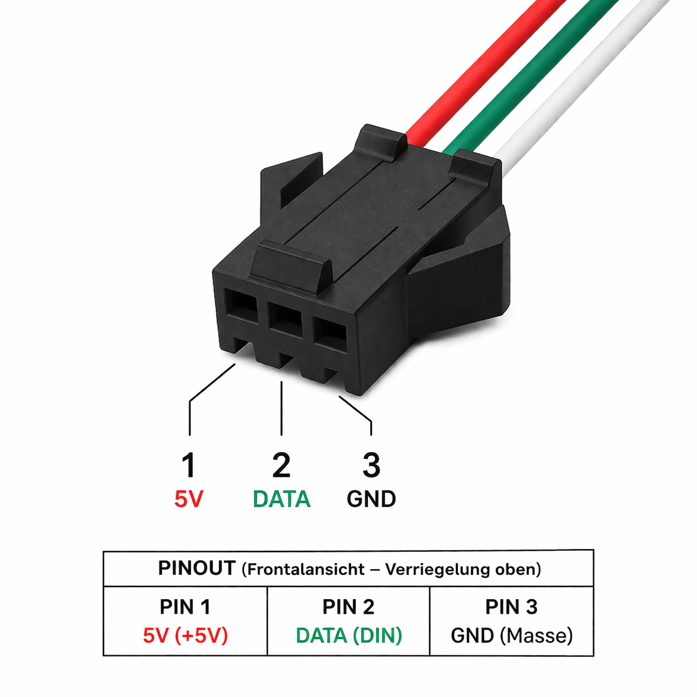
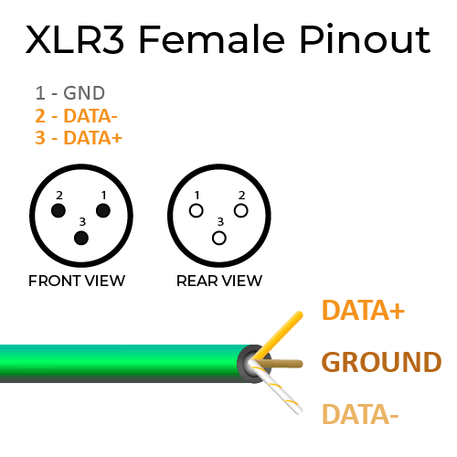

WsMax
user guide
introduction
Thank you for choosing WsMax.
WsMax is a two-piece inline extender for WS281x LED data lines. It transports data over differential signaling through standard 3-pin XLR DMX cable, improving stability and usable distance compared to direct single-wire runs.
package contents
- WsMax transmitter unit
- WsMax receiver unit
- quick wiring sheet
device overview
WsMax consists of:
- transmitter unit (controller side)
- receiver unit (strip side)
transmitter unit interfaces:
- JST-SM 3-pin female to controller side wiring
- XLR 3-pin male to long cable link
receiver unit interfaces:
- XLR 3-pin female from long cable link
- JST-SM 3-pin male to LED strip input
pinout reference
JST-SM side:
- pin 1: +5 V
- pin 2: DATA
- pin 3: GND
XLR side:
- pin 1: GND or shield reference
- pin 2: DATA-
- pin 3: DATA+
 
before you start
- verify controller output is compatible with WS281x data signaling
- verify LED strip input is compatible with WS281x data signaling
- use DMX-grade 120 ohm cable for the XLR link
- officially supported link length is up to 1000 m, depending on cable quality
- verify JST pinout and polarity before powering the system
- keep both WsMax units powered at 5 V DC from their respective local side
quick start
- Power off controller and strip power supplies.
- Connect WsMax transmitter JST-SM to the controller-side LED output wiring.
- Connect WsMax receiver JST-SM to the strip data input wiring.
- Connect both WsMax units with a 3-pin XLR DMX cable.
- Power on controller and strip side supplies.
- Send a simple test pattern from the controller.
- Verify stable strip response across the full cable length.
recommended wiring practice
- route DMX cable away from mains and high-current motor lines
- avoid sharp cable bends and high-strain connector mounting
- avoid patching through unknown XLR splitters without signal verification
- keep all grounds referenced as intended in your controller and PSU design
- for permanent installs, lock wiring and document tested pinout
normal operating behavior
- WsMax does not alter WS281x color data by design
- WsMax does not generate effects or timing on its own
- link quality is determined by controller timing, cable quality, power, grounding, and EMI conditions
troubleshooting
no output on strip
- verify both WsMax units receive 5 V and GND on their JST side
- verify DATA line is connected to the correct JST pin
- verify XLR cable continuity and pin order
- verify controller output works with a short direct strip connection
unstable or flickering output
- use DMX-grade 120 ohm cable instead of audio microphone cable
- improve grounding and reduce noise coupling from nearby power wiring
- shorten cable temporarily to isolate site-specific EMI issues
- verify power supply stability at controller and strip side
wrong colors or shifted pixels
- verify strip type and controller timing profile match
- verify channel order and color mapping in controller configuration
- verify no extra level shifter or protocol bridge conflicts in the line
works direct, fails over long cable
- verify transmitter and receiver are not swapped
- verify XLR pin assignment is pin 1 GND, pin 2 DATA-, pin 3 DATA+
- retest using a known-good DMX cable and clean power source
safety and handling
- use only within specified low-voltage DC wiring systems
- do not use in wet environments without suitable enclosure protection
- disconnect power before rewiring
- do not force connectors or reverse-polarity JST wiring
maintenance
- keep connectors clean and dry
- inspect cable strain relief periodically
- replace damaged cables and connectors immediately
notice
Specifications and features may change without prior notice.